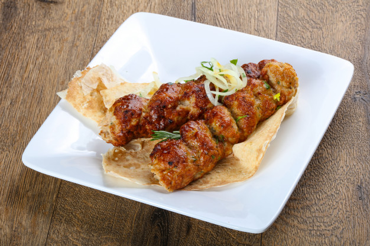

Pollo Tandoori
Origen: India
El pollo tandoori es un platillo tradicional de la India, preparado con pollo marinado en yogur y especias como el comino, el jengibre y la cúrcuma. Se cocina en un horno de barro llamado tandoor, lo que le da su característico sabor ahumado. Es un plato muy popular en la gastronomía india.